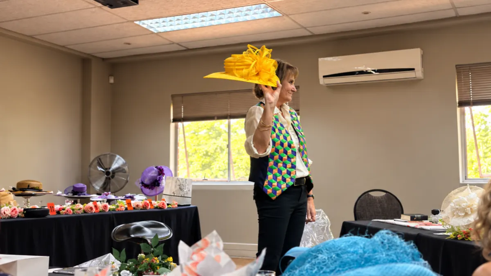
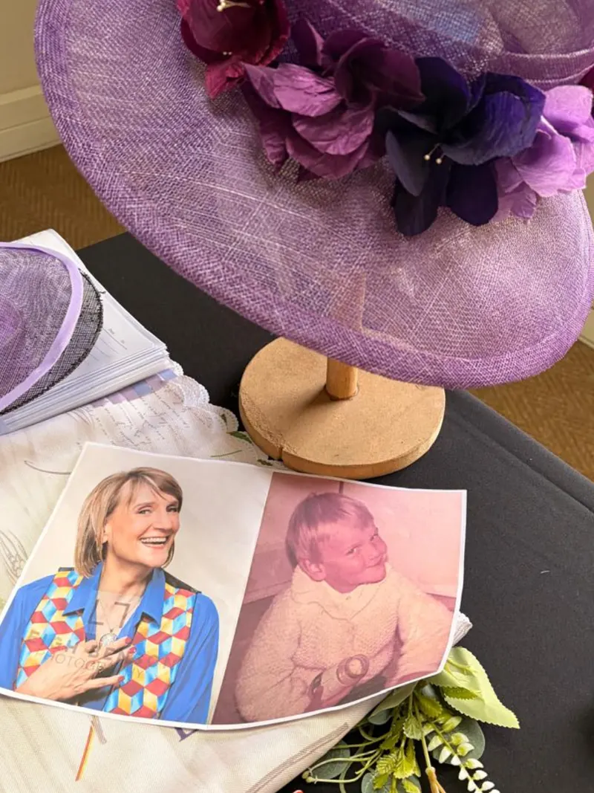
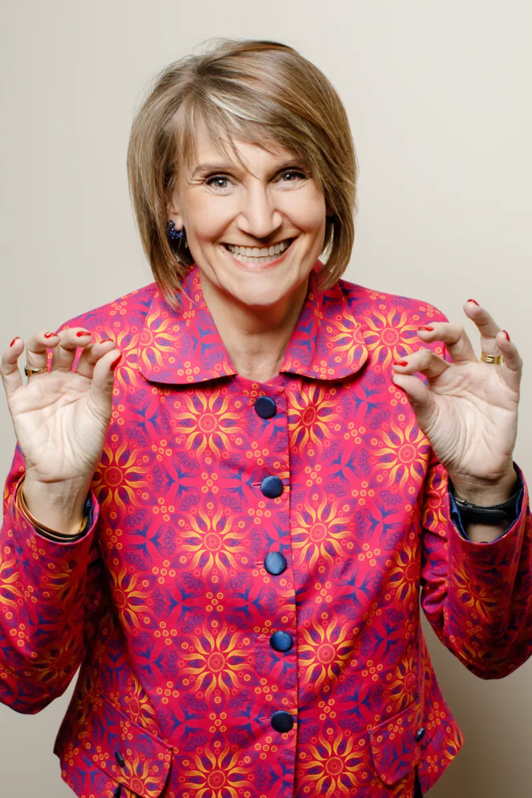
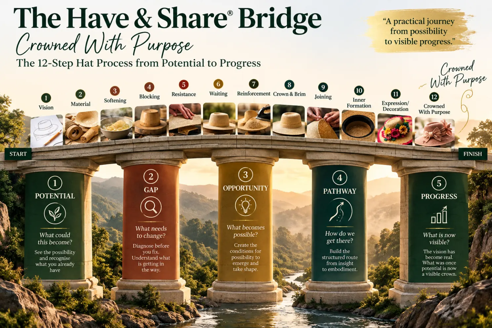

COMENSA Accredited Senior Coach, Master mBIT Coach, and PQ Coach with
25+ years of experience helping individuals and organisations in South Africa and globally
move past what holds them back.
A Coach Who Has Lived the Work
There is a particular kind of stuck that high-achieving people know well. You have done everything right. The credentials, the career, the recognition. And yet something persists beneath the surface: a quiet sense of disconnection, a ceiling you keep hitting, or a tiredness that no amount of productivity can resolve. Claudina Hafenscher has spent more than 25 years learning how to help people find the root of that experience and move through it.
Claudina is the founder of Have & Share Coaching, a life coaching and corporate facilitation practice based in Glen Marais, Gauteng, working with clients across South Africa and globally. She holds accreditation as a COMENSA Senior Coach, the highest professional standard for coaches in South Africa, as well as international certifications as an Accredited Master mBIT Coach and Certified PQ Coach. Before she was a coach, she spent more than 25 years as an educational kinesiologist, working with children and adults on the most fundamental question in human development: why is it so difficult to access what you already know you are capable of?
That question has never left her practice. It has only deepened.
Her approach to coaching is whole-person in the truest sense: she works with the whole person, not just the presenting issue. This means integrating four evidence-informed methodologies that each address a different layer of human experience. Positive Intelligence (PQ) builds the mental fitness to handle challenges without chronic stress or self-sabotage. mBIT coaching (Multiple Brain Integration Techniques) brings the head, heart, and gut into alignment so that decisions are made from the full range of human intelligence, not just the rational mind. Educational Kinesiology restores cognitive agility through body-mind integration, particularly useful for executives and teams operating under sustained pressure. And the Reality Check EcoMetric provides C-suite leaders and HR teams with data on the invisible human dynamics that are driving, or quietly undermining, organisational performance.
What makes Claudina's work distinctive is not the methodologies themselves, but the way she holds them together. In a single coaching engagement, she moves fluidly between the rigour of the PQ framework, the somatic intelligence of mBIT work, and the body-based precision of kinesiology as the moment requires. Her clients do not experience four separate tools: they experience one coherent process that meets them where they are and goes where they need to go.
Over more than a decade as a senior coach, Claudina has worked with more than 500 individuals and facilitated sessions for over 10,000 corporate delegates across 15 major organisations in South Africa and internationally. Her individual clients include executives navigating significant leadership transitions, entrepreneurs who have built successful businesses but feel quietly trapped inside them, and professionals who are skilled and capable but have lost touch with what the work is actually for. Her corporate work includes team alignment facilitation, leadership retreats, and culture diagnostics for organisations that know something is off but cannot quite name what it is.
She has a particular gift for the things that are hardest to say out loud. Her clients consistently describe her as someone who can name what they have been unable to name, and who creates enough safety that naming it actually leads somewhere. She is direct without being blunt, challenging without being harsh, and committed to outcomes that last rather than insights that fade. She does not believe in coaching as a space for exploration without destination. She believes in both.
Before founding Have & Share, Claudina worked extensively in educational settings, helping children and young adults remove the invisible blocks that prevented them from learning and performing at their potential. That work taught her something she still regards as foundational: most limitations are not fixed. They are patterns. And patterns can be changed when you know how to work with them correctly.
That conviction drives everything at Have & Share. Whether she is working with an individual who has hit a wall they cannot see around, a team that has stopped trusting one another, or an organisation trying to understand why its culture is not matching its values, Claudina brings the same quality of attention: rigorous, warm, and stubbornly optimistic about what becomes possible when people stop managing their limitations and start genuinely building past them.
Credentials & Certifications
COMENSA Accredited Senior Coach
Coaches and Mentors of South Africa (COMENSA) — the highest accreditation standard for professional coaches in South Africa.
Accredited Master mBIT Coach
Certified by mBIT International to use Multiple Brain Integration Techniques at master level with individuals and corporate teams.
Certified PQ® Coach
Certified by Positive Intelligence, Inc. to deliver the PQ mental fitness programme to individuals, teams, and organisations.
Reality Check™ EcoMetric Practitioner
Certified practitioner of the Reality Check EcoMetric diagnostic tool, translating invisible human dynamics into measurable organisational data.
Claudina is drawn to the space where real change happens: not the surface fix, but the root
cause. Whether she's working with a CEO navigating a complex transition, a team that has
forgotten how to trust each other, or an individual who has built a successful life that no
longer feels meaningful, she brings the same quality of presence: curious, direct, and deeply
committed to outcomes that last.
She has seen what is possible when people stop managing their limitations and start building
genuine capacity. That is the work she shows up to do, every session.
"Claudina is a highly skilled and intuitive coach. Her use of practical tools, physical learning aids, and a gentle yet firm approach make the sessions impactful. She expertly guides her clients towards their goals, leaving them feeling hopeful and equipped."
Liezl Thom
Managing Director
Am I the Right Coach for You?
The best way to find out is a free, no-obligation 30-minute discovery session. Let's have an honest conversation.
By Claudina Hafenscher · 14/10/2026 · Originally published on LinkedIn

Crowned With Purpose, 10 October 2026. A morning of vulnerability, connection, and discovering that we can still find purpose in the midst of our own journey.
There was a time in my life when I could not even look at myself in the mirror. That may sound like a small thing to some people, but for me it was not small at all.
For years, I lived through depression, bipolar disorder, psychiatric treatment and ECT. I struggled to understand what was happening within me, and why I responded to life in the ways I did. There were times when I could barely recognise the person I had become, never mind look her in the eyes.
I remember the journey with that mirror.
First, I could not look.
Then, after a long time, I could at least touch it.
Eventually, after almost ten years, I could begin to look at the woman standing before me.
Not because everything was suddenly right. Not because I had all the answers. But because, little by little, I had begun to understand her.
Last Saturday, 10 October, I facilitated my first Crowned With Purpose workshop. I have facilitated workshops for more than 25 years. I have worked with individuals, leaders and organisations. I have witnessed extraordinary moments of personal discovery.
But this particular Saturday touched something very deep within me.
Perhaps because this time, I was not only facilitating a journey.
I was sharing my own.
It all started with an empty table
The workshop began with an empty table, the Word of God as our foundation, and a journey through the twelve steps of making a hat.
Having worked with millinery, I know that a beautiful hat does not simply appear. It begins with a vision. We select our materials. We soften, shape, block, work through resistance, wait, reinforce, join and form what will eventually become a finished creation.
There are stages when the material does not seem to respond the way we expected. There are stages when we need to be patient, when we cannot force the process, and when what is taking shape looks very different from the original vision.
And isn't that so often what happens in life?
We begin with potential. We have dreams and plans. We imagine what our lives might look like. Then life happens.
As I took the women through the twelve steps, I began sharing my own story. A journey through mental illness, the influence of my childhood and the patterns I had developed long before I understood what they were doing to me.
I spoke about the experiences that had shaped my life, and how long it had taken me to begin recognising the difference between surviving and truly living.
And then I held up a photograph.

The little girl who waited for me, and the woman who is learning to stand up for her.
The little girl who waited for me
It was a photograph of little Claudina.
Standing there with that photograph in my hands, I became emotional. I looked at that little girl and felt such sadness. But what I experienced was more than sadness.
I wished I could reach into that photograph, pick her up and simply hold her.
Hold her like a mother would hold her little girl.
Because she had been waiting so patiently.
For the first seven years of her life, little Claudina did not have the understanding or the tools I have today. She did not understand the circumstances around her. She simply learned how to survive.
And the ways she learned to survive followed her into adulthood.
Standing there, I realised once again that it is now my responsibility, as adult Claudina, to stand up for her. Not to blame her for how she survived. Not to keep allowing those old patterns to determine who she becomes. But to understand her, care for her and help her reconnect with the natural strengths that were always within her.
I cannot go back and change what happened to that little girl.
But I can take responsibility for what happens to her from here.
The room became quiet.
I was tearful, and I could feel the emotion of the women sitting before me. And then something happened that was profoundly meaningful to me.
I felt supported.
Not judged. Not questioned. Not expected to pull myself together.
Simply supported.
That may sound like such a small thing, but for me it was immense.
Support was not something I had always experienced during the most vulnerable moments of my life. I had learned to survive, to manage, to find my way through circumstances that sometimes felt impossible.
Yet there I was, speaking about a little girl who had waited so long for someone to stand up for her, and I was experiencing that very acceptance myself.
The women allowed me to be vulnerable.
And instead of that vulnerability making me feel weak, it gave me strength.
Perhaps little Claudina was not the only one receiving something precious that morning.
Perhaps adult Claudina was too.
A question I had not expected
As I shared my experience with depression and mental illness, one of the women raised her hand and asked me something that has stayed with me.
How was it possible, she wanted to know, that I could stand before a room full of women, speak so openly about such painful experiences, allow myself to be vulnerable, and yet remain composed without completely falling apart?
I thought that was such an important question.
Because there was a time when I could not have done what I was doing that morning.
It has taken me years of inner work to begin understanding myself, my responses and the patterns that developed during my childhood.
One of the most profound parts of that journey, particularly in recent years, has been my work with Positive Intelligence®.
It helped me recognise something about the mental patterns I had carried for so long.
The patterns I now recognise as my saboteurs were once little Claudina's heroes.
They were the ways she had learned to protect herself when she did not have the understanding or resources to respond differently. I cannot simply condemn those little heroes. They helped her through years when survival was all she knew.
But there is something I have had to teach adult Claudina.
Those patterns that once protected little Claudina do not always serve the woman she has become.
I showed the ladies something I often do. I brought my thumb and forefinger together, as though I were nipping something in the bud.
Because that is what I am learning to do when I recognise one of those old patterns beginning to take over.
I notice it. I name it. And before I automatically fall into the familiar response, I remind myself that I have a choice.
I can respond from the understanding and resources I have today, rather than allowing a childhood survival pattern to make the decision for me.
It does not mean I never feel sad. It certainly does not mean I never cry, or that I no longer need support.
But I am learning that I can feel those emotions without automatically becoming trapped in the responses that once helped me survive.
Little Claudina needed her heroes.
Adult Claudina is learning to use her natural strengths.
And I think that is why the woman's question touched me.
She was seeing something that had taken me a very long time to learn.

Nipping it in the bud. Recognising the patterns that once protected little Claudina, while learning to respond from my natural strengths today.
Even strong women need somewhere to put down the weight
As I looked around the room that Saturday morning, I was very aware of the women sitting before me.
These were women with their own histories, their own responsibilities, their own disappointments and their own hopes. Some were women in leadership, accustomed to being the ones who make decisions, hold things together and provide strength for others.
And yet, beneath all those roles, there is still a woman.
A woman who may be tired. A woman who may carry questions she has never felt free to ask. A woman who may have become so accustomed to being strong that she has forgotten what it feels like to be supported herself.
I think that was one of the most meaningful things about the morning.
We were not there to compare our pain or measure whose journey had been the hardest. We were not there to pretend that faith makes life's difficulties disappear.
We were simply women, making room for one another.
There was room for laughter. There were tears. There were moments of quiet reflection. And there was the recognition that being crowned with purpose does not mean we have never been wounded.
It does not mean we have everything worked out.
It means that what has happened to us does not have to be the whole story of who we are becoming.
For me, that is something very different from putting on a brave face.
It is the possibility of standing before God, before ourselves and sometimes before another person, without having to hide every part of our story.
When Hermann found his voice
And then, just when I thought the morning had given me everything it possibly could, something else happened.
Hermann arrived.
My husband had come earlier than expected to help me pack up. He certainly had not come prepared to address a room full of women.
But I saw an opportunity.
I looked at him and said, “You've got three minutes. Tell these ladies what it was like from your perspective.”
I think he was rather surprised!
And then he began to speak.
For so many years, I have been the one telling the story of what it is like to live with mental illness. I know what it feels like from the inside. I know the fear, the confusion, the struggle, and the long journey of learning to understand myself.
But there is another person who has walked much of that journey alongside me.
My husband.
As Hermann spoke about his experience, his voice began to break. He became emotional, and I could see how deeply those years had touched him too.
It was one of those moments when words seemed inadequate.
I went over and embraced him.
The women reached for tissues, and suddenly the room was holding not only my story, but something of his as well.
I was reminded that when one person struggles, the impact reaches far beyond that individual. Those who love us have their own experiences, their own fears, their own difficult moments.
Sometimes, while we are so occupied trying to survive our own circumstances, we do not fully see what the people alongside us have been carrying.
That Saturday morning, I was given an opportunity to see a little more of what Hermann had carried.
And I think the women saw something important too.
Behind the story of a woman learning to stand again, there can be another person who has been learning how to stand beside her.
It was not a perfect or rehearsed moment.
It was simply real.
And perhaps that is why it meant so much.
The bridge I am still crossing
There is another part of this story I want to share, because I do not want anyone reading this to imagine that I have somehow reached a place where everything in my own life is settled.
I haven't.
For some time now, I have been working with the image of a bridge. A bridge that takes us from where we find ourselves to where we might have the potential to go.
Through Have & Share®, I have been developing a framework built around five pillars: Potential, Gap, Opportunity, Pathway and Progress.
I have come to understand that we cannot simply rush from identifying potential to expecting progress. We first need to recognise the gap between where we are and where we want to be. We need to understand what opportunities genuinely exist, and then build a pathway that enables us to move forward.
It is closely connected to something I believe deeply: Diagnose Before You Fix™.
And yet, while I have been developing this work for others, I have found myself standing on a bridge of my own.
This year, some of the doors I had relied upon in my professional life began closing. Opportunities I had worked towards changed or disappeared. The security I had hoped to build through years of facilitation, coaching and business development suddenly felt very uncertain.
There have been moments when I have asked myself some difficult questions.
After more than 25 years of facilitating and working with people, where do I go from here?
What happens when the work you know so well no longer provides the stability you need?
And how do you continue taking steps when you cannot clearly see the other side?
I have often imagined myself standing somewhere near the middle of that bridge.
It is where the wind seems strongest.
And strangely, what appears to be the highest point of the bridge can feel like the deepest valley of your life.
That is where I find myself in many ways.
Still believing. Still questioning. Still building. Still trying to recognise the opportunities that may be opening, even while grieving some of the doors that have closed.
And that is why Saturday mattered so much to me.
For the first time, I had consciously brought my Christian faith into the centre of a workshop in this way. I had stepped beyond the familiar structure of my corporate facilitation work and allowed something deeply personal to become part of what I offered.
I did not know how it would be received.
But as I stood among those women, I felt that the work we were doing mattered.
It did not answer every question about my future.
It did not suddenly remove the uncertainty.
But it reminded me that there is still purpose in taking the next step, even when the whole pathway is not yet visible.

Potential, Gap, Opportunity, Pathway, Progress. The bridge I help others build, and the one I am still learning to cross myself.
The crown is not the end of the journey
There was something else that became very meaningful to me as I prepared for this workshop.
I had developed the twelve stages of making a hat as a way of helping women reflect on their own lives. Only later did I begin to recognise how naturally those stages connected with the five pillars I had been developing through Have & Share®.
Potential. Gap. Opportunity. Pathway. Progress.
It was as though two parts of my life's work were beginning to speak to one another.
The milliner in me understood that a hat cannot be forced into its final shape. The coach in me understood that people cannot simply be pushed into becoming who they are meant to be. And the woman of faith in me was reminded that there is a purpose in the forming, even when the process is uncomfortable.
I think of the little girl in the photograph.
I think of the woman who could not face herself in the mirror.
I think of Hermann, standing unexpectedly before a room of women, finding words for experiences we had carried together for so many years.
And I think of the women who came that Saturday morning, each carrying a story I could never fully know.
We were not all at the same stage of the journey. Some of us were still being softened. Some were facing resistance. Some were waiting. Some were learning how to stand again.
But each woman had a place in that room.
I am grateful for the courage with which they participated, for their honesty, their compassion, their laughter, and the quiet ways in which they supported one another.
I went into that workshop hoping to create a space where women could recognise something of their identity and purpose.
I came away having received something myself.
I do not know exactly what the next chapter of my professional life will look like. I still have questions, and there are days when the wind on my bridge feels very strong.
But I am learning that I do not need to have reached the other side before I can take the next step.
Perhaps that is part of what being crowned with purpose means to me today.
Not pretending the journey has been easy.
Not denying the marks of what has shaped us.
Not waiting until every part of our lives is perfectly arranged before we allow ourselves to be seen.
But recognising that even here, in the middle of the forming, our lives still carry meaning.
And perhaps, after all these years, I can finally look into the mirror and say to that little girl:
I see you.
I understand a little more now.
And I am not leaving you behind.
When you look into your own mirror today, do you see the person you have become, or are you still looking through the eyes of the person who had to survive?